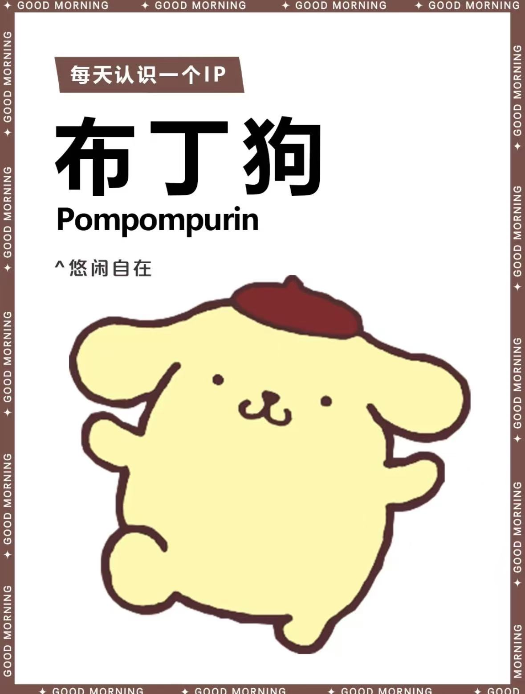
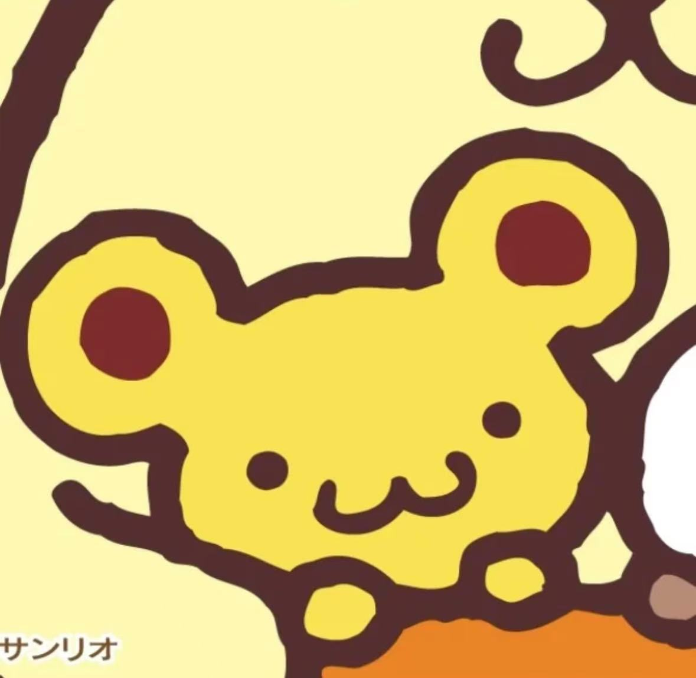
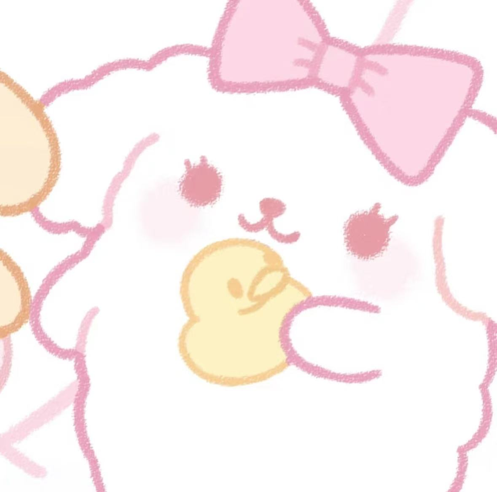

关于布丁狗
深入了解这只戴着贝雷帽的可爱黄金猎犬
布丁狗是谁？
布丁狗(Pompompurin)是三丽鸥公司于1996年创造的卡通形象，是一只可爱的黄金猎犬。他最大的特征是总是戴着一顶棕色的贝雷帽。
布丁狗的名字来源于法语的"pompom"(毛球)和英语的"pudding"(布丁)，因为他圆滚滚的身材看起来就像一个美味的布丁。
布丁狗的性格温和友善，喜欢交朋友。他总是带着温暖的笑容，能瞬间点亮任何人的心情。他的爱好包括吃布丁、午睡和和朋友一起玩耍。

诞生于
1996
布丁狗的特征
标志性贝雷帽
布丁狗总是戴着一顶棕色的贝雷帽，这是他最显著的特征。帽子让他看起来更加可爱和有特色。
有趣事实： 布丁狗从不摘下他的贝雷帽，即使在睡觉时也戴着！
圆滚滚的身体
布丁狗有着圆滚滚、软绵绵的身体，看起来就像一个布丁。这种设计让他更加可爱和讨喜。
有趣事实： 布丁狗的体重是个秘密，但他确实比看起来要重！
温暖的笑容
布丁狗总是带着温暖的笑容，让人看了心情愉悦。他的笑容是他最迷人的特征之一。
有趣事实： 布丁狗的笑容能感染周围的每个人，甚至能让雨天变晴天！
布丁狗的朋友们
布丁狗有一群可爱的朋友，他们经常一起冒险
最好的朋友
玛芬 Muffin
一只白色的小狗，布丁狗最好的朋友。性格活泼开朗，喜欢和布丁狗一起玩耍。
- 生日： 7月10日
- 特征： 蓝色蝴蝶结
- 爱好： 和布丁狗一起冒险

好朋友
司康 Scone
一只可爱的仓鼠，布丁狗的好朋友。性格温和，喜欢收集各种小东西。
- 生日： 11月3日
- 特征： 红色围巾
- 爱好： 收集坚果

小妹妹
卡仕达 Custard
布丁狗的小妹妹，一只可爱的黄金猎犬。性格天真烂漫，非常依赖布丁狗。
- 生日： 9月22日
- 特征： 粉色蝴蝶结
- 爱好： 跟着布丁狗
布丁狗的日常生活
早晨 8:00 AM
布丁狗起床后的第一件事就是享用妈妈准备的丰盛早餐，特别是他最爱的布丁。
上午 10:00 AM
布丁狗会和朋友玛芬、司康一起在公园玩耍，或者去探索新的地方。
中午 12:00 PM
午餐时间！布丁狗喜欢吃妈妈做的炖肉，特别是里面的胡萝卜。
下午 2:00 PM
午睡时间。布丁狗喜欢在阳光充足的地方小憩，有时会梦见美味的布丁。
晚上 6:00 PM
晚餐后，布丁狗会和家人一起看电视或阅读故事书，享受温馨的家庭时光。
布丁狗知识小测验
测试你对布丁狗的了解有多少
1. 布丁狗的生日是哪一天？
2. 布丁狗最好的朋友是谁？
3. 布丁狗最爱的食物是什么？
你的得分: 0/3
你对布丁狗的了解还有待提高哦！